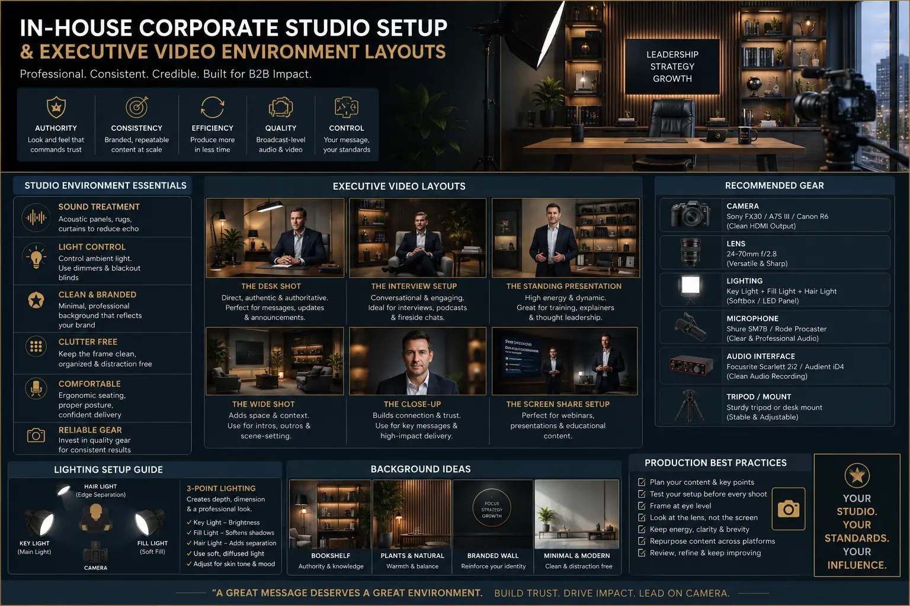
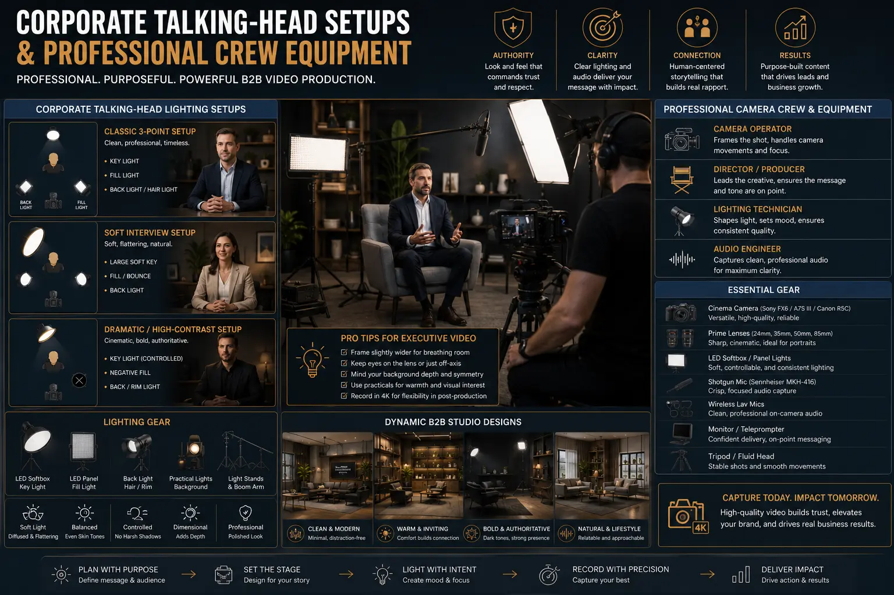

Setting Up an In-House CEO Studio Environment That Commands Premium Respect
The Transition to Executive Authority in Modern Digital Landscapes
In the current digital ecosystem, B2B buyers no longer connect with dry corporate logos or standard brochures. Enterprise trust is built upon the faces and voices of your leadership team. When CEOs, founders, and managing directors communicate their values and market perspectives directly, it humanizes the brand and establishes deep industry authority. This shift has accelerated the adoption of Creator-Led B2B Video Production across all major business sectors. Leaders who fail to establish a clean visual presence on channels like LinkedIn or YouTube risk losing their voice to more agile competitors.
However, maintaining a high-quality video brand requires a consistent and frictionless workflow. Relying on external production crews for every minor market update is expensive, logistically complex, and creates huge delays. To resolve this bottleneck, forward-thinking organizations are building an In-House Corporate Studio Setup. A dedicated internal media room allows executive teams to walk in, click a single switch, record their message, and walk out. But an in-house studio is only as good as its planning; poor lighting, echoing audio, and sloppy backgrounds can destroy the viewer’s perception of executive authority.
Achieving a broadcast-grade aesthetic requires planning your space around an optimized Executive Video Environment Layout. This goes beyond setting up a camera and a tripod in a spare conference room. It involves managing the spatial dynamics between the lens, the speaker, and the background, while incorporating Dynamic B2B studio designs that visually communicate prestige. In this masterclass guide, we will break down the essential design factors, including professional Corporate talking-head lighting setups, custom audio treatment for office rooms, and the ultimate professional camera crew equipment list required to produce industry-leading corporate media.
Zero Setup Friction
A permanent studio setup is always ready. Executive leaders can walk in, record a sudden market response or industry reaction in 15 minutes, and walk out. Eliminating setup and teardown times removes the primary scheduling bottleneck in executive communication.
Broadcast-Grade Consistency
By locking in camera settings, lighting positions, and audio configurations, you guarantee that every video asset maintains the exact same premium visual identity. Consistency builds brand prestige and elevates your business visibility systems.
Substantial Cost Efficiency
Investing in high-end internal gear eliminates recurring external videography, lighting, and rental fees. For companies producing content weekly, the capital investment of an in-house facility is recovered within the first few production cycles.
Rapid Content Velocity
An internal studio enables high-velocity content slicing. By capturing raw, high-quality video files internally, your editing team can quickly generate dozens of platform-native video clips for LinkedIn, keeping your organic brand channels active.

Spatial Composition: Organizing Your Executive Layout
To design a room that feels spacious and cinematic, you must understand visual depth. A common mistake in corporate offices is placing the presenter's desk directly against a flat drywall background. This results in a flat, visually unappealing shot that reminds viewers of a low-effort webcam conference call. To build credibility, your Executive Video Environment Layout must prioritize separation.
When designing the room, position the presenter at least 5 to 7 feet away from the background wall. The camera should be positioned an additional 6 to 9 feet in front of the presenter. This physical distance allows you to use a longer focal length lens (such as a 50mm or 85mm prime lens) at a wide aperture, which naturally blurs the background. This depth separates the executive from their surroundings, pulling the viewer's focus directly to their eyes and expressions.
In addition, your background should feature Dynamic B2B studio designs rather than boring office cubicles. Utilize textured wood slats, physical bookshelves, neutral-colored curtains, or dark accent walls to add visual interest. Integrating subtle corporate branding—such as a non-reflective, modern logo plate or backlighting in your corporate brand colors—adds visual structure. Make sure your background elements are clean, styled, and free of clutter to avoid distracting from the presenter's message.
The Science of Cinematic Lighting for Corporate Sets
Lighting determines the tone and perceived value of your production. Flat fluorescent ceiling lights are the enemy of premium content—they cast harsh downward shadows, emphasize wrinkles, and cause camera sensors to capture muddy, unnatural skin tones. To make the executive look energetic and authoritative, you must implement dedicated Corporate talking-head lighting setups.
The industry standard for corporate talking-head videos is the classic three-point lighting structure, adapted for professional office spaces:
- The Key Light: This is your main light source. It should be a high-quality, color-accurate LED light equipped with a large softbox (such as a dome diffuser). Position this light at a 45-degree angle to the side of the presenter and slightly above their eye level. This placement creates a beautiful, natural shadow wrap on the opposite side of the face, defining the presenter's cheekbones and jawline.
- The Fill Light or Reflector: To prevent the shadow side of the face from becoming too dark, position a white reflector board or a lower-intensity soft LED light on the opposite side of the key light. This gently fills in harsh shadows, keeping the look professional and approachable.
- The Backlight / Rim Light: Positioned behind the presenter and slightly out of the camera's frame, this light points at the back of their head and shoulders. It creates a subtle glowing outline that separates the presenter from the background, adding an instant layer of broadcast quality to your Corporate talking-head lighting setups.
Once your primary subject is illuminated, use low-power accent lights to highlight details in the background. LED tube lights, small uplights behind furniture, or a warm practical desk lamp in the background can add color contrast and warmth to the overall scene. Ensure that the background lights are kept dimmer than your key light; the presenter's face must always remain the brightest and most engaging element in the frame.
Acoustic Treatment: Crafting Clear, Echo-Free Audio
While audiences may tolerate slight visual imperfections, they will immediately tune out of a video with poor audio. Echo, hiss, and background noise are immediate indicators of low production value. Standard corporate offices are typically filled with hard, flat surfaces—drywall, glass partitions, large conference tables, and hard floors—which bounce sound waves around, creating a muddy, echo-filled recording.
Implementing effective audio treatment for office rooms does not require a complete architectural remodel. The main goal is to introduce soft, sound-absorbing materials to intercept and damp sound reflections. Start by placing a thick, plush rug on the floor between the speaker and the camera. If the room has windows, hang heavy fabric drapes that can be closed during recording sessions.
For the walls, install acoustic foam panels or fabric-wrapped fiberglass acoustic panels at the primary reflection points—specifically on the walls to the sides of the speaker and directly opposite them. If you prefer to avoid the look of dark acoustic foam, you can use canvas prints wrapped over acoustic absorption material, or install open bookshelves filled with books of varying shapes and sizes, which act as natural sound diffusers. Proper audio treatment for office rooms transforms a hollow office space into a warm, quiet broadcast environment, providing a solid foundation for premium corporate content.
The Corporate Gear Checklist: Professional Equipment Setup
Selecting the right hardware is essential to build a studio that is easy to use and produces consistent results. To ensure your media team has all the necessary tools, you should draft a comprehensive professional camera crew equipment list that focuses on reliability and ease of use.
Your essential equipment list should include the following core components:
- Cinema-Grade Camera Body: Invest in a professional camera body that supports 4K resolution, 10-bit internal recording, and excellent auto-focus (such as the Sony FX3, Canon C70, or Panasonic GH6). These cameras offer high dynamic range, ensuring clean details in both shadows and highlights.
- Premium Prime Lenses: Rather than a zoom lens, use a fast prime lens (like a 50mm or 85mm prime lens with an aperture of f/1.8 or f/1.4). Prime lenses offer superior glass quality, sharpness, and a wide aperture that makes background blurring easy.
- Wireless Teleprompter: memorizing scripts is a major source of friction for busy corporate leaders. A teleprompter that mounts directly in front of the lens allows the presenter to read their script naturally while maintaining direct eye contact with the viewer.
- Broadcast-Quality Microphone: A directional shotgun microphone (such as the Sennheiser MKH416 or Rode NTG5) mounted on a boom pole just above the camera frame provides crystal-clear audio without requiring a visible lapel mic on the presenter’s clothes.
- Robust Support Systems: A heavy, professional tripod with a fluid head is critical. Any micro-shake in your shot immediately ruins the premium look of your video, so invest in sturdy camera supports from your professional camera crew equipment list.
Having these standardized gear packages locked in a dedicated space ensures that the production quality remains identical on every shoot, allowing your marketing team to scale their output without constant technical troubleshooting.
The Solo Talking-Head Set
- Primary Angle: Eye-level camera, centered on the presenter to build trust
- Lighting: Three-point setup with a large soft key light at a 45-degree angle
- Visual Focus: Deep background depth with subtle corporate branding elements
The Co-Hosted Interview Set
- Camera Setup: Dual cameras (A-cam wide, B-cam close-up on the guest)
- Lighting: Soft key lights on both speakers, avoiding harsh shadows
- Visual Focus: Lounge seating configuration with a relaxed, conversational feel
The Screen-Share / Demo Set
- Camera Setup: Overhead camera for desk views, secondary camera for presenter
- Lighting: High-power, color-accurate key light to highlight products
- Visual Focus: Clean desk surface with a dedicated monitor for live annotations

Scaling Content and Optimizing Visibility Systems
Designing a beautiful space and buying top-tier equipment is only the beginning. To maximize the return on your investment, you must build a content production system that is scalable and consistent. The goal of your in-house studio is to act as a content engine that supports all your digital marketing efforts, facilitating seamless, high-retention executive media production.
To make the production process as easy as possible for busy executives, design the studio to be "always on." All lights should be pre-configured and connected to a single power switch. The camera should remain mounted on its tripod with locked exposure settings, and the boom microphone should remain in position. This minimizes setup friction; the CEO can walk in, flip a switch, read their script from the teleprompter, and walk out. This is the foundation of high-velocity, high-retention executive media production.
Once the raw video assets are recorded, they can be distributed across multiple digital channels using structured business visibility systems. A single 10-minute video recorded by the CEO can be sliced into multiple short-form clips for LinkedIn, transcribed into a detailed blog post, and used in marketing emails. Developing clear business visibility systems ensures that your premium video assets get maximum exposure, establishing your executive team as the primary thought leaders in your industry and driving enterprise growth.
Conclusion: The Strategic Value of Enterprise-Grade Video Assets
In modern B2B marketing, an in-house media facility is no longer a luxury; it is a critical communications asset. By investing in a professional In-House Corporate Studio Setup, you are investing in the authority and long-term trust of your brand. A professionally planned space, complete with an optimized Executive Video Environment Layout, clean Corporate talking-head lighting setups, and high-performance acoustics, tells your target market that your organization is an industry leader.
By equipping your internal media team with a reliable professional camera crew equipment list and ensuring proper audio treatment for office rooms, you eliminate the friction that stops most corporate video initiatives from succeeding. The result is a consistent pipeline of high-retention executive media production that feeds your business visibility systems, helping your executive leadership command the premium respect they deserve.
At The PhD Ads in Madurai, we specialize in helping brands design, configure, and launch their own in-house video capabilities. From initial spatial design to setting up your equipment, we help you build video channels that drive real enterprise growth.
Key Topics
Ready to Build an In-House CEO Studio That Commands Enterprise Respect?
At The PhD Ads in Madurai, we specialize in helping B2B brands design, configure, and optimize their in-house corporate studios. From selecting the ideal executive video environment layout to setting up professional lighting and audio treatment, we build video assets that drive brand authority and enterprise growth.
Email: team@e2o.in